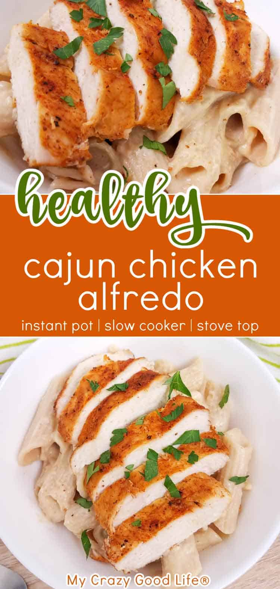

Back to Homepage
Cajun Chicken Alfredo

This cajun chicken alfredo is a healthy dinner recipe the whole family will love. It's a spicy take on your favorite chicken alfredo recipe! This healthy alfredo sauce recipe is super versatile so you'll want to keep it on hand for all your pasta dishes!
Ingredients:
- 2 lbs. chicken breast
- 2 tsp olive oil
- 2 tsp Cajun seasoning
- 3 cups water
- 4 cups whole grain pasta
- 2/3 cup cheese parmesan
- 3/4 cup cottage cheese 2%
- 3/4 cup Greek yogurt 2%, plain
- 2 tsp garlic powder
- 1/4 tsp pepper
Instructions:
Stove top:
- Coat your chicken breasts with olive oil and Cajun seasoning.
- Heat a large skillet on high heat on the stove.
- When the skillet is hot, sauté the chicken on each side for 2-3 minutes until it gets crispy. Remove the chicken from the pan and set aside.
- Add the water to the skillet and deglaze your pan.
- Add pasta to the water and give a quick stir.
- Move the chicken back to the pot and set on top of the pasta.
- Bring the water in the skillet to a boil, then cover the pan and reduce the heat to medium low, so that the liquid keeps simmering. Cook for 12-15 minutes, stirring occasionally, until the pasta and chicken are cooked through.
- While the pasta is cooking, blend together the cottage cheese, Greek yogurt, garlic powder and pepper to make your alfredo sauce. Set aside until ready to use.
- When your chicken is cooked through, remove and slice.
- Pour your alfredo sauce and parmesan cheese over the pasta and stir until it’s combined.
- Serve warm and top with the sliced chicken.